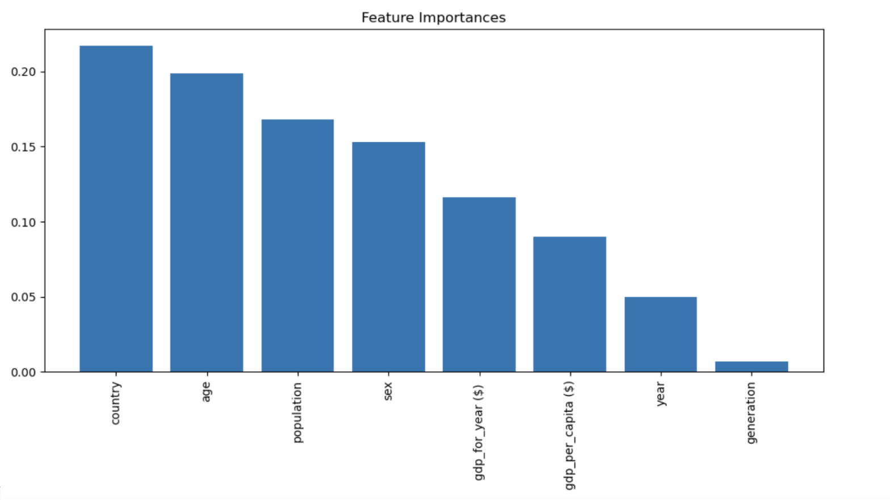
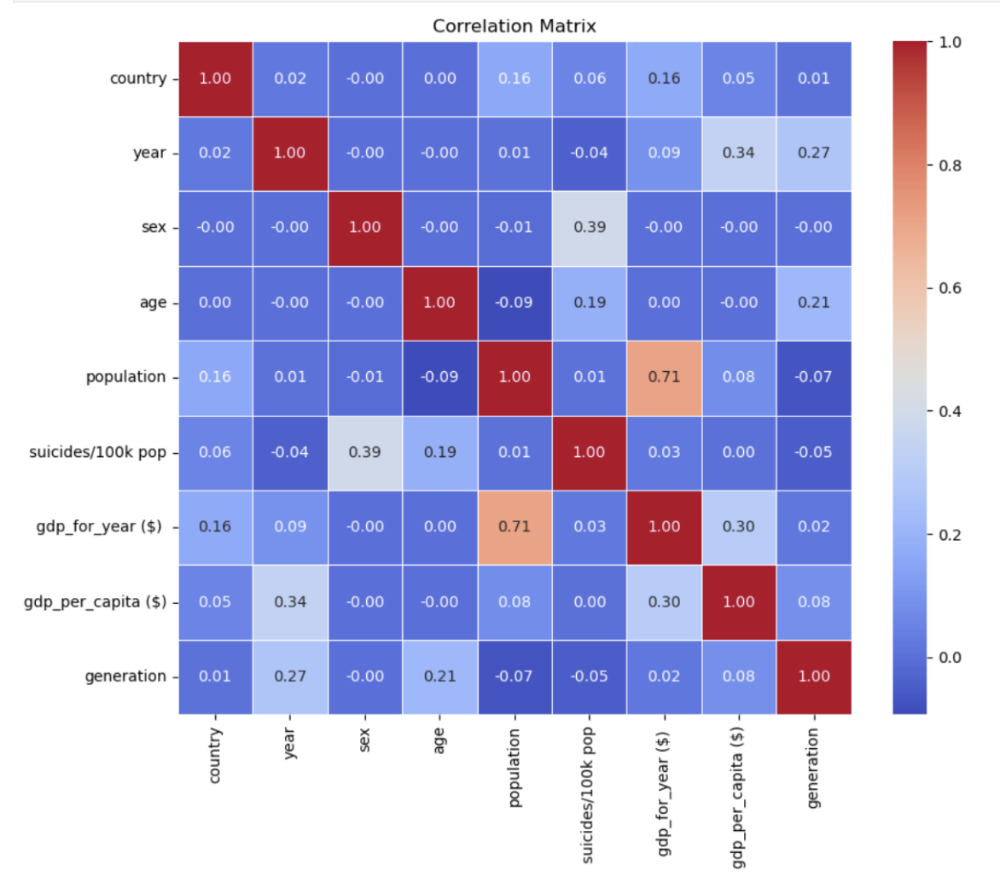
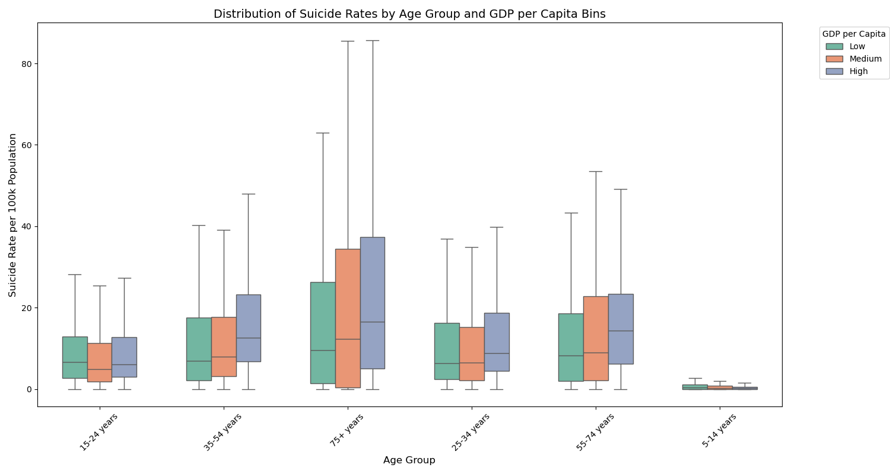

Socio-Economic & Geographic Correlations of Suicide Deaths
Overall Introduction
Just as the unemployment rate serves as a good indicator of economic health,
understanding the US suicide rate is important in order to assess the well-being of
the nation's citizens. The suicide rate shows the number of suicides
per capita, reflecting the prevalence of suicide and the
effectiveness of suicide prevention efforts. The rate serves as a
key indicator of public health, highlighting both mental and emotional
distress within a society.
Examining suicide rates across various demographics and geographic locations
gives us valuable insights. Factors like age, gender, socioeconomic status,
and access to mental healthcare are all factors that play into suicide. By analyzing
the trends in these areas, we can identify populations most vulnerable to
suicide and work to better prevention strategies.
Suicide rates can be influenced by various social issues. For example, increased
suicide rates may correlate with problems like social isolation, a lack of
community support, and/or substance abuse. However, addressing these social
issues can contribute to a decrease in suicide rates.
With this project, we aim to indentify trends and risk groups. This would ultimately allow
us to help improve current suicide prevention strategies, and help them be better predictors
when it comes to certain groups at risk.
The Suicide Occurences Dataset from Kaggle provides valuable insights into suicide trends worldwide.
It contains 27,820 rows covering 101 countries across 32 years, of data collection. The dataset includes
twelve variables, featuring key demographics like age and sex, as well as economic factors such as GDP
per capita. Each entry represents a single suicide incident, with metrics like suicides per one hundred thousand residents
helping to understand this complex issue. These variables are summarized in the following table:
Variable Name
Details
Country
Country name
Year
The year the data is sampled from
Age
Age group the data is sampled from
uicides_no
Number of Suicides for the sample
Population
Population of the sample
Suicides/100k Pop
Number of suicides per one hundred thousand sample residents
Country-Year
The combination of the sample country and year
HDI for year
Human Development Index value for the sample row
gdp_for_year($)
The country gross domestic product for the year
gdp_per_capita($)
The gross domestic product per capita for the country
Generation
The generation of the sample
Our project also utilizes country geographic data
in order to better identify geographic trends among occurrences. We hope that by identifying
these trends our findings can be used to better mitigate occurrences and provide more targeted
support to those who are more likely to be victims.
Interactive Map
The first interactive visualization was an interactive world map that helped to explore
the geographical factor we sought to analyze. There are several ways to interact with the
visualization. The graph can be zoomed in and zoomed out to see different countries in
more detail, or to see the overall geographical trend of suicides. The map is colorized
by suicides per 100k population.
From this, we were able to see that Eastern and Northern
European countries tend to have higher suicide rates. These countries include Belarus,
Kazakhstan, and Finland. Another way to interact with the visualization is through the
tooltip. By hovering the cursor over a country, several suicide statistics pop up.
These include the country name, GDP per year, GDP per capita, suicide count, population,
and suicides per 100k population. From these tooltip statistics, we were able to see that
GDP doesn’t have a noticeable effect on suicide rate. For example, the United States has
13 suicides/100k population, and a high GDP per year, but Dominica has approximately 0
suicides/100k population, and a low GDP per year. Vice versa, there are countries with
a low suicide rate and low GDP per year, and countries with a high suicide rate and
high GDP per year.
Overview of Feature Importance
>
For our next static visualization, we decided to utilize a feature importance graph from a random forest regression, to help us understand
what variable will help us predict the target variable best. A random forest regressor is a machine learning model that uses decision trees
to predict a continuous outcome, improving prediction accuracy and robustness by averaging the results of individual trees.
A feature importance graph visually represents the relative importance of each feature in the model, helping to identify which
variables most significantly impact the prediction. In this case, we kept the prediction variable as
Suicides/100k. We chose this variable because it is the best way to standardize the suicide rates with a
varying group of populations. When you have such a wide range of populations, it is important to find a way
to standardize and create a basis of comparison. From our random forest regressor, we found out that 'country'
and 'age' are the two most important factors in being able to predict suicides/100k. This did come to a surprise for
us, as we expected GDP to have a larger impact. This information would prove useful if we ever want to try and combine
these factors into a polynomial or multivariate regression to come up with the best way to accurately predict the
suicides/100k population. Feature importance does not imply causation; it indicates how useful each feature is for the model’s
predictions given the current data.
Analyze effect of Generation and Gender in different countries.
This static visualization demonstrates the relationship between generation and the number of suicides as well as gender and the number of suicides. You can choose a country to analyze, and the United States is given as a default as this is the country most viewers likely relate to. Through the use of the positioning of the bars, the height of the bars, and the color of the bars, a few key takeaways become apparent. First, and most obvious, females have a much lower number of suicides as opposed to men. This could have been due to the way the data was gathered, but assuming it is comprehensive, this is a significant piece of information and should be taken into account in the future. The other main takeaway from this visualization is that the middle generations - that is, Boomers and Gen X - have more suicides than the other generations. However, this finding can be easily explained by population. There are simply more Boomers than previous generations, and Millenials and Gen Z are not old enough to have a significant number of suicides. In the future, it would be interesting to have a suicide rate for these generations in order to see if there is a difference. A simple way to do this would be to merge population values with this dataset and manually calculate the rate.
Correlation Matrix for Each Variable
To build on the feature importance graph, we also decided to create a correlation heatmap, to
be able to see the interactions between each relationship. This will back up the feature
importance and show us which specific variables will impact each other. Once again, this will
prove helpful if we want to create a more complex multivariate regression to predict suicides/100k
more accurately. One of the issues with a multivariate regression is multicollinearity; this is when
the impact one variable has on the outcome variable is over or under predicted due to having a relationship
with another variable. One way to fix this is to create interaction terms using the confounding variables. This
heatmap will allow us to make insights like this for the future. However, for now, we can simply just talk about what
the heatmap contains.
Based on the correlation matrix, the strongest relationship is between population and gdp_for_year. If we look back
at the random forest regressor, both of those features were in the middle in terms of importance. Some other notable relationships
include a very minimal relation (close to 0) between generation and country, and sex and country.

Comparing GDP Per Capita to Suicides Per One Hundred Thousand
The purpose of this Altair interactive scatter plot is to compare suicide occurences per 100,000 population with the
gross domestic product per capita of a selected country. The visualization also provides a correlation metric
(R-squared) to quantify the relationship between these two variables given the selection. The design features points
representing the graph’s mark and vertical and horizontal positions representing the graph’s channel. Additionally,
hover data is utilized to display the country and number of total suicide occurences for a selected point. The graph
generally showed a common positive trend between increasing GDP per capita linked to more frequent occurrences, some
like Albania and the UAE had a weak connection. Interestingly, the UK and Switzerland saw a decrease in occurrences
despite their growing GDP per capita, but the correlation between the two remained strong. South Korea served as another
outlier, experiencing increases in both GDP per capita and event occurrences, but still maintaining a positive
correlation.
Distribution of Suicide Rates by Age Group and GDP per Capita Bins

For our final static visualization, we decided to explore GDP a little bit more. We knew age group was a more vital component,
but we still wanted to see whether suicide rates would vary by GDP as well. We decided to use a boxplot to visually compare
the distributions of suicide rates across different age groups, and see how these distributions vary with the economic status
of a country. Our box plot provides a summary of the suicide rates within an age group for a given GDP per capita bin, which was
automatically generated from the data (by taking the range and dividing it into 3 groups). We found that there is a notable spread
in suicide rates within age groups, but between GDP per capita and suicide rates is not immediately apparent.
Summary:
Overall, this exploration was insightful into the factors that contribute to suicide in a nation. We learned that
GDP and generation do not have a noticeable effect on suicide rate. In contrast, much less females took their own life
than males did. We learned that ‘country’ and ‘age’ have the biggest effects on suicide rate, and that even within an
age group, GDP does not affect suicide rate as much, which is something we didn’t expect. In the future, we wish to
conduct more in-depth analyses on specific grouping of populations. This includes ethnicities/races, levels of income,
industries, and more. Beyond analysis, these conclusions could also be used to help suicide prevention and destigmatize it.
Furthermore, using all these variables to come up with the best way to predict suicide rate will also be an engaging process.
If you're interested in the project and want to share more opinions or any resources about the project, please contact
any member of our team.
Contacts:
Andrew Lotocki: lotocki.a@northeastern.edu
Nicholas Labuda: labuda.n@northeastern.edu
Elliot Jerng: jerng.e@northeastern.edu
Aarav Gambhir: gambhir.aa@northeastern.edu